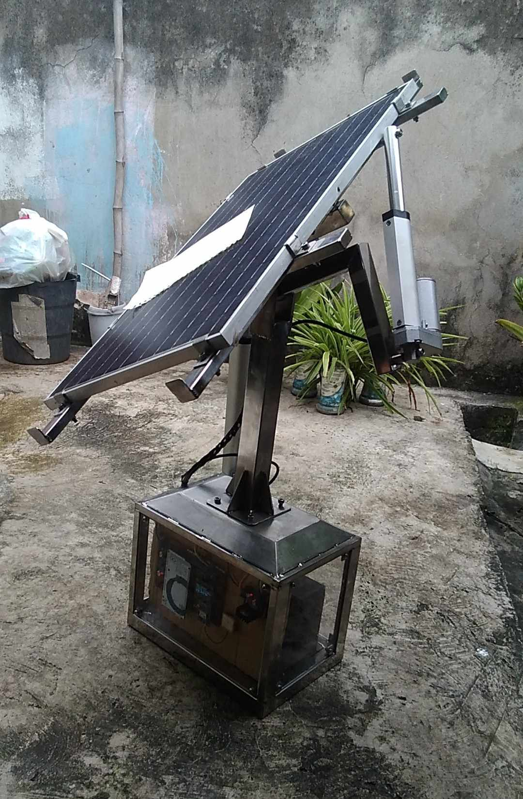

The Dual-axis Solar Tracker automatically aligns solar panels toward the sun throughout the day to maximize energy collection. It uses a combination of sensors and control logic to adjust the pitch and roll angles of the panel via linear actuators.
The system calculates the sun's position using GPS coordinates, time, and date. It adjusts the solar panel using a PID controller based on the MPU6050’s orientation feedback to maintain accurate alignment with the sun’s path.
// Simplified pseudo-code
read MPU6050 orientation;
read GPS longitude, latitude;
calculate sun position (azimuth, altitude);
compute error = sun_position - current_orientation;
PID_output = Kp*error + Ki*sum(error) + Kd*d(error);
control motor direction via L298N;
The PID algorithm ensures smooth and stable motion, compensating for environmental changes like wind or load variation.
The tracker successfully maintained optimal alignment throughout the day, achieving improved energy efficiency compared to fixed panels. It demonstrated reliable performance with minimal overshoot due to effective PID tuning.